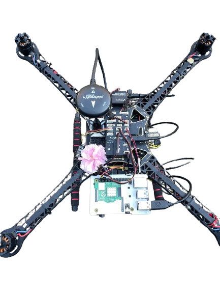
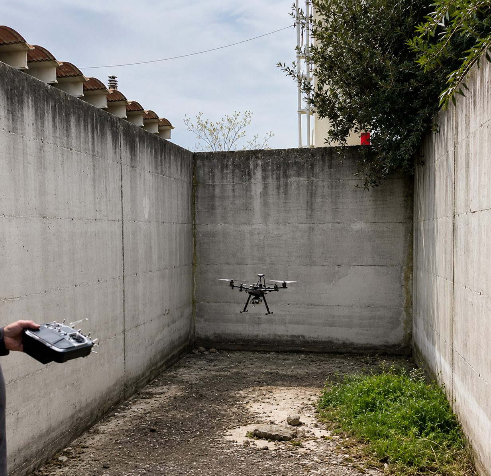

MSc thesis project · ZHAW Zurich University of Applied Sciences · 2025–2026
I designed and flight-tested a controller that keeps a PX4 quadcopter hovering in place using only two downward-looking optical-flow sensors. No GPS, no motion-capture system.
A small drone normally knows where it is from GPS. Indoors, between buildings or near walls, that signal is weak or missing, and the drone starts to drift. My thesis asked a simple question: can a low-cost drone hold a steady hover using only cameras that watch the ground move underneath it?

How the pieces talk to each other. The Pi does the sensing and control; PX4 keeps doing what it's best at, stabilising the airframe.
I started in MATLAB/Simulink with the UAV Toolbox, following earlier projects at ZHAW. It couldn't support the flight setup I needed, so I documented exactly why and moved the whole project to ROS2 in Python. Throwing away the first plan was the hardest part of the thesis, and the reason the drone flew.
Every flight followed the same procedure: GPS disabled, the safety layer armed, one change at a time. After each flight I went through the logs to see what the estimator and controller actually did, then changed the next thing.
The best run held position autonomously for about 43 seconds, with the drone's attitude staying within ±2°.

I'm Divyanshi Mishra, an aerospace engineer (MSc, University of Pisa, July 2026, Space Engineering). Besides this thesis, I worked in a six-person team on a deep-space asteroid mission study, where I sized the reaction wheels, designed the preliminary thermal control and built the power budgets. I'm looking for a first role in GNC, flight control or space systems, and I'm happy to relocate.
divyanshimishrayo1@gmail.com
Full thesis and CV available on request.